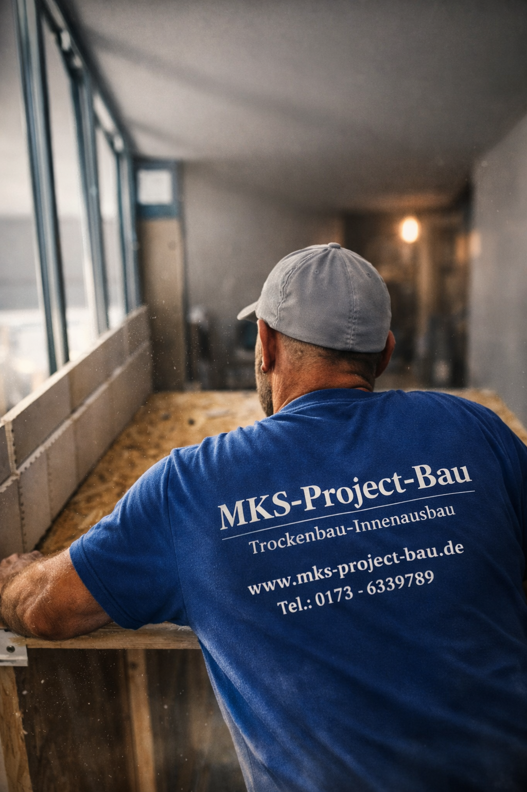
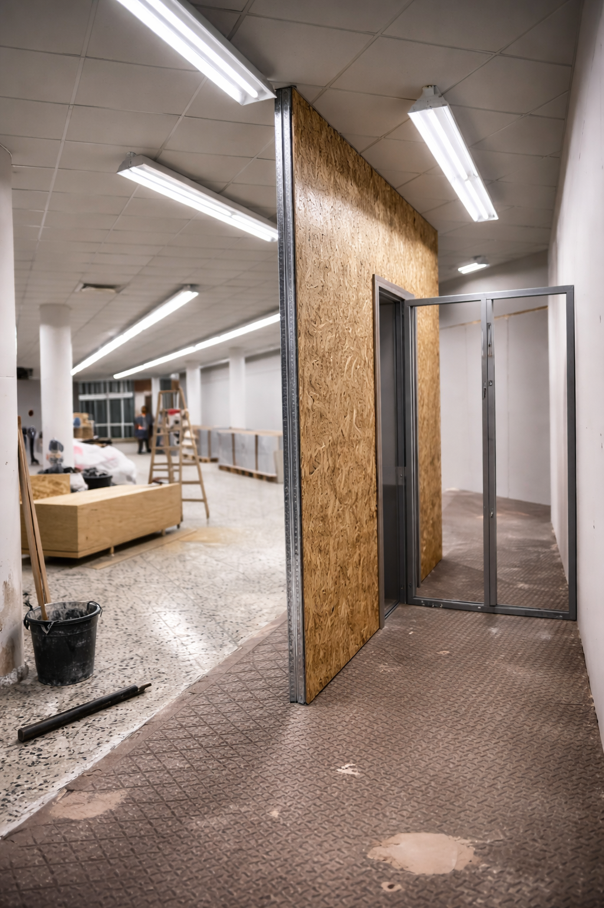

Moderne Unternehmen brauchen moderne Lösungen. Wir entwickeln Software, die mit KI denkt und sich selbst optimiert.
Wir integrieren Large Language Models (GPT-4, Claude) in Ihre Workflows. Von intelligenter Datenanalyse bis hin zu automatisierten Entscheidungsprozessen – KI, die arbeitet.
Repetitive Tasks kosten Zeit. Wir automatisieren Prozesse, die keine menschliche Entscheidung brauchen.
Ihre Daten liegen verstreut? Wir bauen Pipelines, die Daten sammeln, normalisieren und nutzbar machen.
Moderne Software ist modular. Wir entwickeln API-first: Jedes System kann kommunizieren, jede Schnittstelle ist dokumentiert, jeder Prozess ist skalierbar.
Unternehmen verlieren bis zu 40% ihrer Produktivität durch manuelle, repetitive Aufgaben. Wir ändern das.
Rechnungen, Bestellungen, Kundendaten – alles wird per Hand eingegeben. Fehleranfällig. Zeitintensiv. Vermeidbar.
CRM, ERP, E-Mail – jedes System hat seine eigenen Daten. Niemand hat den Überblick. Entscheidungen werden auf Basis unvollständiger Informationen getroffen.
Daten sind da, aber nicht nutzbar. Keine Analysen, keine Prognosen, keine datengetriebenen Entscheidungen.
Maßgeschneiderte Systeme für Ihre spezifischen Herausforderungen.
Branchenspezifische Lösungen für Wartung, Handwerk, Dienstleistung. Von Auftragsmanagement bis Abrechnung – alles in einem System.
Bestehende Systeme verbinden oder ablösen. Daten migrieren, ohne Downtime.
Echtzeit-Übersicht über alle wichtigen KPIs. Desktop, Mobile, überall.
Standard-Software passt nicht? Wir entwickeln individuell: Von MVPs bis zur Enterprise-Lösung. Agile Entwicklung, transparente Kommunikation, messbare Fortschritte.
Lassen Sie uns Ihre Prozesse analysieren und konkrete Lösungen vorschlagen. Kostenloses Erstgespräch.